SAS：用最终预测损失学习有限注意力预算下的上下文排序
SAS（Simple Attention Sparsification）研究如何把已经训练好的稠密语言模型改造成更有效的块稀疏注意力模型。第一作者 Zhiwei Li 来自腾讯 HY LLM Frontier 与香港科技大学（广州），合作机构还包括香港科技大学；Zhiwei Li 与 Lei Zhu 为共同一作。论文于 2026 年 9 月 11 日提交 arXiv，所读 PDF 首页标注 9 月 14 日，本文按当前 v1 内容记录。论文入口：SAS: Simple Attention Sparsification via End-to-End Optimization of Context Ranking。官方代码仓库于本次阅读时可访问，包含训练、评估目录和 SGLang 子模块说明；已核验公开入口与说明，未运行训练或复现实验。
硬 Top-K 选块会阻断语言模型损失到选择器的梯度，因此已有可训练稀疏注意力常用逐层稠密注意力蒸馏。但模仿原模型在哪些位置分配较大权重，并不等于在有限预算下选中最有助于最终预测的上下文；这种监督还可能忽略跨层互补和 value 对预测的实际贡献。
1. 背景和问题
长上下文语言模型每生成一个新 token，都要通过注意力从过去的键值缓存中读取信息。对单个解码步而言，历史越长，需要读取的键和值越多；对持续增长的整个生成过程而言，把每一步的历史长度加起来，就得到随长度近似二次增长的累计注意力工作量。这个成本在长推理、带工具调用的多轮代理和长文档理解中尤其突出，因为上下文不仅来自用户输入，还会不断加入模型自己的推理、工具返回和中间状态。对已经部署的模型来说，重新设计骨干并从头训练通常代价很高，因此论文选择在稠密预训练完成后学习轻量选择器，尽量保留原模型的能力和现有推理基础设施。
稀疏注意力真正稀缺的是每个查询可读取的历史位置。 若模型只允许看一小部分历史，最直接的问题是哪些位置该被保留。局部窗口假设最近内容最有价值，带 attention sink 的方法额外保留少量特殊位置，查询相关的检索方法则试图按当前 token 的需求选取历史。上述路线都能降低参与注意力计算的 token 数量，但选择规则是否真正服务最终答案并不容易判断。同一个词在早层可能用于局部句法，在深层可能参与事实整合；单次局部注意力权重很大，也未必意味着删去它一定伤害最终输出。这使“注意力稀疏化”更接近一个受限资源条件下的上下文分配问题。
SAS 使用连续历史块作为分配单位，而非直接为每个 token 单独排名。块级摘要把若干相邻键压缩成一个较短表示，选择器读取当前查询与这些摘要并为各块打分，再用 Top-K 决定读取哪些键值块。这能减少选择阶段的表示规模，也方便与 GPU 分块计算配合。但压缩引入了第二个约束：一个块的少数关键信号可能被池化摘要稀释。因此，块选择器即便训练目标正确，也不能自动恢复摘要已经丢失的信息。这个限制后来在附录的 RULER 长距离检索实验中变得非常明显，不能把主文的推理提升泛化为任意长度下的无损记忆。
为什么不直接让语言模型损失训练选择器？问题出在分数到索引的离散操作。只要某个小扰动没有改变 Top-K 排名，选中集合就保持不变，后续注意力输出也不通过索引感知这个扰动。语言模型损失可以更新正常的可微算子，却无法沿“生成一个整数索引集合”这条路径得到有意义的选择器梯度。已有方法于是使用代理监督，例如让每一层的选择器模仿该层稠密注意力中累计权重较高的块。这种蒸馏有直接可计算的目标，工程上也容易组织，却把最终预测问题转换成了局部注意力分布拟合问题。
作者特别指出代理目标的两层偏差。第一，逐层拟合没有要求不同层之间形成互补；多个层可能花费稀缺预算反复读取相似块，而忽略在整体计算中有用的其他信息。第二，注意力分布主要刻画查询与键的匹配，输出却是这些权重对 value 的加权和。即使两个 token 的注意力权重相同，其 value 方向、大小及经过后续层后的影响也可能完全不同。用注意力质量覆盖率评价选择器，并不能完整度量它对下一 token 预测的作用。SAS 并未声称稠密注意力权重没有价值，而是认为它不足以独自承担有限预算排序的监督信号。
论文的控制变量设计因此很重要：在主要后训练实验中，SAS 与 SeerAttention-R 使用同一种 AttnGate 选择器、相同 Qwen3 骨干和相应训练数据，主差别是监督方式。这样，如果最终推理表现更好，可以较有针对性地支持“预测损失提供了更合适的排序训练信号”。这比同时换骨干、扩大选择器、增加训练数据后再比较稀疏模型更容易解释。不过这仍是具体架构与数据条件下的实验结论，不能推出所有蒸馏目标都会失败，也不能把有限任务上的优势等同于普遍最优的上下文选择策略。
本文中的“后训练”相对于稠密预训练而言，涵盖范围比通常的指令微调或强化学习后训练更宽。主要实验冻结 Qwen3 骨干，只更新轻量选择器；另一组扩展实验则从 OLMo3 的基础检查点出发，同时更新骨干和选择器，进行约五百亿 token 的继续预训练。两者训练资源、可改变的参数以及归因方式都不同。把后者的结果也写成“只训练一个小门控就恢复能力”会严重误读证据，本文在实验章分别讨论这两种设置。
另一个容易混淆的词是“端到端”。训练侧的端到端，指语言模型最终损失能经注意力输出回传到选择器；它不意味着 Top-K 索引本身变得连续可导，也不意味着每次都训练骨干。性能侧的端到端解码，指在服务后端中计时完整解码步骤，而非孤立注意力算子；它也不等于包含预填充、外部工具调用和用户排队时间的完整请求耗时。论文提供了这两层端到端证据，但其边界必须分别保留。
块稀疏在这里减少的是每一步读取的键值范围，并不等于把全部未选历史从缓存永久删除。未来查询仍可能选择先前没有被访问的块，因此保留历史缓存、维护块摘要与减少本步带宽是不同的资源问题，需要分别计算。
阅读这篇论文最有价值的线索，是观察作者如何把“梯度能到达”推进到“梯度能教会有用排序”。简单接上一条可微路径仍可能得到退化解：历史门控全部趋近一，或原始分数整体趋零，训练损失看似更低，但推理时的稀疏选块更差。于是门控放在哪里、是否归一化、是否保留连续相对大小以及只训练选中块是否足够，都成为决定性问题。这些设计都围绕同一个目标：让有限历史块的优先级与最终预测形成稳定联系，而不仅是让优化器形式上接收到非零梯度。
2. 方法
2.1 从离散选块到可学习的上下文排序
符号解释：设当前查询为 $q\in\mathbb{R}^{d}$，历史键值矩阵为 $K,V\in\mathbb{R}^{n\times d}$，省略缩放因子后，稠密注意力与普通稀疏注意力分别为： 这里 $\mathcal S$ 是被读取的 token 索引集合，$K_{\mathcal S}$ 与 $V_{\mathcal S}$ 是相应子矩阵。把历史划分为大小为 $b$ 的连续块 $B_m$，选择器输出块分数 $s$，选中历史块与实际访问集合为：
$R_{\theta}$ 是参数为 $\theta$ 的选择器，$C$ 是候选历史块数，$k$ 是选中块数；用小写 $k$ 避免与键矩阵 $K$ 混淆。$B_0$ 表示始终保留的当前块，其内部仍遵守因果掩码。论文以 token 预算报告结果，主要实验块大小为六十四，预算对应的历史块数随之变化；当前块的保留规则不能从公式中删除。
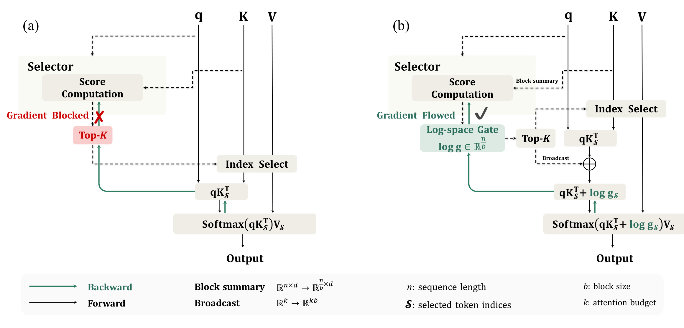
图一左侧展示通常的块稀疏流程：查询与块摘要进入选择器，分数经过 Top-K 变成索引，再从原始键值中取出相应块执行注意力。黑色箭头表示前向信息流，绿色箭头表示反向梯度；红色叉号落在分数与离散选择之间，说明仅靠索引选择无法把输出误差转化成选择器学习信号。注意原始的键和值仍然存在，选择器读取的是用于检索的块摘要，最后执行精确注意力的却是选中块中的 token。这个区分决定了方法没有直接用压缩后的摘要取代所有 value。
图一右侧保留相同的离散检索步骤，但让选择器分数另外进入对数门控。块级门控广播到被选 token 的注意力 logits 后，语言模型输出会连续依赖这些分数，因而绿色梯度路径可以绕过整数索引回到选择器。这里的改变是增加一条可微的注意力调制路径，Top-K 本身仍然离散；选择器学到相对排序后，推理仅使用该排序产生索引。底部的 block summary 与 broadcast 图例明确了两个方向相反的尺寸变化：摘要把长序列压缩成块表示，广播把块门控重新展开到选中的 token。框架因此同时保留了硬稀疏计算和连续学习信号，避免为了让索引可导而在每次训练中显式计算所有 token 对的完整注意力矩阵。
还应注意，这张图解释的是训练路径，不能据此认为线上仍要对每个 token 添加学习门控。论文算法二在推理时去掉连续偏置，仅以选择器得分找出 Top-K 历史块，再在这些块和当前块上运行普通 softmax 注意力。训练与推理之间存在这一差异，消融实验因此统一采用实际稀疏推理来检验排序，不能只比较训练图内的语言模型损失。
2.2 内部门控、相对归一化与连续排序
SAS 对历史块的分数做 softmax，而当前块门控固定为一。上面两式中 $g_m$ 是第 $m$ 个历史块的正门控，$\operatorname{LSE}$ 是 log-sum-exp，$g_{\mathcal S}$ 表示把被选块门控广播到对应 token 后的向量。对数门控进入注意力 softmax 内部，等价于在归一化之前用门控乘以注意力未归一化质量，因而会重新分配不同块之间的权重。若把门控放在 softmax 外，只是对已经固定的注意力概率对应的 value 贡献缩放，两者不是同一种优化问题。这个差别可由原文公式五直接看到。令 $do$ 表示损失对输出的梯度，$p_i$ 为无门控注意力概率，$\widetilde p_i$ 为内部加门控后的概率，则：
$v_i$ 是 token 的 value，$o$ 是当前输出。内部门控的 $v_i-o$ 给出相对当前混合结果的方向，而外部门控只看固定概率下的 value 项。因而内部门控更直接回答“把质量重新分给这一块能否降低预测误差”，外部门控则允许通过整体幅度改变输出。本文不是把 $v_i-o$ 当作人工设计的标签；它自然来自归一化注意力的导数，跨层的预测误差也已经包含在 $do$ 中。
历史 softmax 的公共项 $-\operatorname{LSE}(s)$ 看似可能在下一次 softmax 中被抵消，但当前块没有加这个公共项。它只应用于历史块，所以会调节历史总体与当前块之间的注意力平衡。给所有历史分数同时加常数，归一化门控保持不变；直接把原始分数加进注意力则会改变历史对当前块的相对强弱。论文图三观察到独立 sigmoid 门控容易趋近一，原始 logits 容易趋近零并降低方差，这两种路径都接近不带偏置的历史注意力，削弱了用于排名的区分信号。这里的归一化不仅用于数值处理，更构成一个有竞争关系的历史预算分配。
连续门控还避免了把分数提前压成二值指标。对 token logit $z_i=qk_i^{\top}$，令 $b(i)$ 表示其所属块，下列第一式给出软门控概率；第二式对应硬门控配合直通估计器时，被丢弃 token 使用仅包含选中集合的分母的代理项。两者的区别发生在归一化所覆盖的位置范围：
第二式不是声称实际注意力概率可以大于一，而是在解释被丢弃位置的反向代理量：它自己的指数项不在分母中，因而没有统一的单位上界。随机初始化时若把大 logit 的块排除，代理梯度可能被指数放大。保留连续大小既传递“选哪块”的信息，也传递“已选块之间谁更重要”的信息，避免直通估计把两种功能混在一个不稳定的二值近似里。
2.3 稀疏训练范围与训练、推理的分工
SAS 主要采用 sparse scope，只对选中历史块和当前块执行门控注意力。这样节省计算，但未选块没有独立的 value 内容反馈。由于历史门控仍统一归一化，未选块分数可以间接收到梯度；原文公式八对 $m\notin\mathcal I$ 给出以下对照，分别保留选中集合求和与全部历史求和，避免把间接更新误认为完全没有梯度：
全范围训练多出的本块直接梯度依赖该块内容，稀疏范围的未选块只能通过已选块的公共归一化项变化。图四中未选块更新方向高度相关，正是这种信息不足的表现。因此 sparse scope 初期收敛较慢并不意外；论文的实践判断是最终效果通常相近，而训练代价更低。这是经过实验支持的取舍，不能升级为两种梯度严格等价，也不能声称未选块在训练中完全没有变化。
训练时先得分，再归一化，依据排序选块，把选中门控注入 logits，最后使用标准语言模型损失更新选择器参数。主实验骨干固定，梯度仍需穿过相关注意力计算回传到选择器，冻结参数并不等于停止传播。推理时直接根据分数 Top-K 选块，不再把连续门控乘入注意力，也不需要稠密教师的逐层分布。相同选择器结构使 SAS 与 SeerAttention-R 能在同一稀疏后端加载各自门控检查点，这也把质量比较和计算实现分离得更清楚。
2.4 把门控融合进分块注意力内核
若先显式生成完整注意力矩阵、再加门控，长序列训练会被中间矩阵内存压垮。SAS 的 Triton 实现采用 FlashAttention 风格的分块扫描：计算当前键值 tile 的 logits，在历史块上加载并广播对数门控，按每个 query 的门控阈值屏蔽非选块，随后进行在线 softmax 的最大值、归一化因子和输出累积。当前块保持单位门控并使用因果掩码；若某个 tile 没有查询选择它，可以跳过整块。阈值编码选择集合，但并不意味着整个系统从此不需要获取 Top-K 边界或扫描所有候选摘要。
反向传播重新计算局部注意力概率，依照输出梯度得到 logits 梯度，再把同一历史块内 token 的 logits 梯度相加，形成紧凑的块门控梯度。附录算法三、四明确了这个累积过程，同时支持返回 Q、K、V 的梯度，因此相同门控原则可以用于冻结骨干或全模型联合训练。其工程贡献是让门控操作与稀疏分块计算融合，而非提出一个必须存储全部注意力图的新层。
线上服务采用 SGLang 的 paged KV cache 与 FlashInfer 稀疏解码内核，支持分组查询注意力、每组块选择、CUDA graph 和批量解码。预填充仍使用稠密注意力，解码才执行稀疏选择。 选中块上的注意力读写预算有界，但选择器仍要检查历史块摘要，Top-K 仍需要处理候选集合，因此不能把注意力子算子的近常数成本扩展成整步解码对上下文长度严格无关。效率实验的成本拆分恰好说明：越往超长上下文走，瓶颈越可能从注意力读写转到排名本身。
3. 实验结果
3.1 门控消融检验了什么
主实验使用 Qwen3-4B、8B、14B，冻结骨干，仅训练 AttnGate。训练采用 AdamW、学习率 $10^{-3}$、余弦衰减、块大小六十四、全局批量三十二、最长序列三万二千七百六十八，数学数据训练一个 epoch。同一个训练好的选择器直接用于推理、LongBench 和代理任务。受控门控消融明确使用 OpenR1-Math-220k 的九万三千七百条样本，Qwen3-4B、二千零四十八 token 预算，即三十二个历史块，并在 GPQA-Diamond 上报告十六次生成平均准确率与平均生成长度。
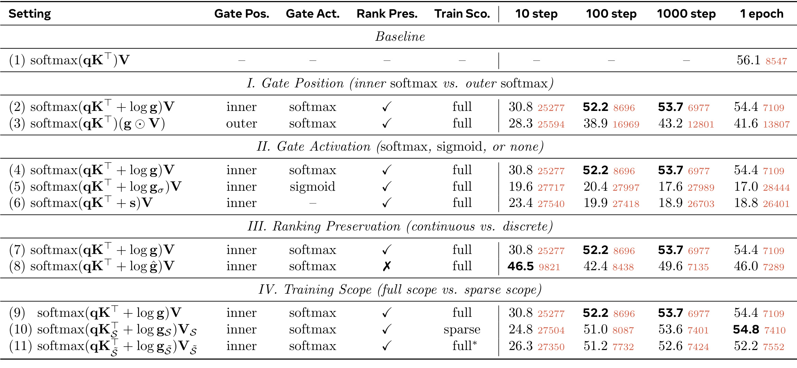
表一横向列出十步、一百步、一千步与一个 epoch 的测试结果，黑色数值是准确率，旁边较小的红色数值是平均生成 token 数；四个横向分组对应位置、激活、连续排序和训练范围。内部 softmax 门控一个 epoch 得到五十四点四，而把门控放在 softmax 外只有四十一点六，同时平均生成长度从七千一百零九变成一万三千八百零七。二者有同样的语言模型损失入口，却没有同样有效的最终排序，这直接反驳了“有梯度就足够”的简化理解。用相对输出信号重新分配注意力，比只缩放已确定的 value 贡献更符合有限预算下的目标。
激活消融更加鲜明：归一化门控五十四点四，sigmoid 十七点零，直接注入分数十八点八。后二者的生成长度接近二万八千或二万六千 token，远高于归一化方案。这与正文图三中的趋一、趋零退化相一致，但并不证明低准确率只由长输出造成；两者是同一失败路径下的相关观测。附录图八还显示这些退化方案可能获得更低训练损失，说明门控训练图内的损失下降和移除门控后实际选块质量之间存在落差，必须以真实稀疏推理验收。
连续排序与硬门控的比较中，硬门控十步时四十六点五，高于软门控三十点八，但一个 epoch 仅四十六点零，低于软门控五十四点四。早期数字不能代表最后效果；作者将其与直通估计的梯度放大联系起来。最后一组 sparse scope 从二十四点八起步，最终五十四点八，与 full scope 五十四点四接近；加噪近似的 full* 最后五十二点二，并未产生额外优势。表中省略的标准差为二点零到二点八，因此不能把零点四的最终差异说成显著超越。附录表九的跨模型比较也不是逐格相等，例如一千零二十四预算的八十亿模型 GPQA，full 为五十五点六二、sparse 为五十三点一七。合理结论是整体可比并节省训练成本，仍可能有特定预算上的差距。
3.2 低预算推理收益最明确
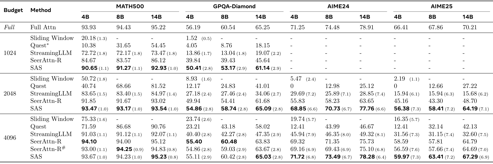
表二按注意力预算分组，每组横向比较 MATH500、GPQA-Diamond、AIME24、AIME25，任务内部再区分四十亿、八十亿、一百四十亿模型。顶行稠密模型提供能力参照，而非另一个固定稀疏预算方法。SAS 在一千零二十四预算的四十亿模型上，MATH500 为九十点六五，SeerAttention-R 为八十四点六七，提高五点九八个百分点；GPQA 为五十点四一对三十九点八四，提高十点五七个百分点。预算越紧，错过关键历史的代价越大，这些差异与作者的上下文排序动机吻合。
二千零四十八预算的 AIME 更能体现贡献：四十亿模型 AIME24 从 Seer 的五十五点八三提高到六十八点八五，增加十三点零二个百分点，稠密模型为七十一点二五；AIME25 从四十五点一六提高到五十六点三八，但距离稠密六十六点四一仍有十点零三个百分点。也就是说，同一个预算和同一个排序学习方案，能在一个任务中接近原模型，却在更难或不同的任务上留下明显损失。把结果概括成“二千预算恢复全部推理能力”会掩盖真正需要权衡的任务差异。
到四千零九十六预算时，一些格子达到或略高于稠密，例如四十亿 AIME24 七十一点七二对七十一点二五，但这点差异小于表中的生成波动，不能解释为稀疏化稳定提高原模型能力。SAS 也不是逐格胜过所有稀疏基线：四十亿 MATH500 的九十三点六七低于原表 Seer 的九十四点一零；八十亿 MATH500 的九十四点二三略低于复现 Seer 的九十四点二五。表格特别区分 Seer 原始结果与带井号的作者复现，Quest 的部分带星号数据来自其他论文图像数字化读取，比较精度并不完全一致。
因此最稳固的观察是低预算下，相同 AttnGate 的最终预测监督显著改善多项困难推理结果；预算放宽后差距缩小、局部交叉，最终是否值得采用取决于目标任务容忍的误差和服务成本。表中的缺失横杠也应保留含义：一千零二十四预算并没有报告完整 AIME 列，不能自行补出“所有任务同样提升”。标准差呈现在 SAS 与部分基线后，未对每一对差值提供统一显著性检验，故本文把百分点差作为描述性比较。
3.3 跨任务迁移与代理表现
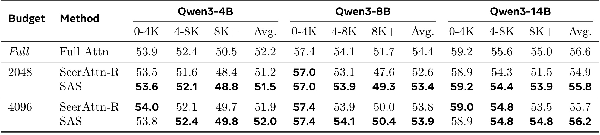
表三把输入长度分成零到四千、四千到八千、八千以上，并报告平均值。这组设置的重要性在于选择器只用数学数据训练，没有为 LongBench 再专门适配；评估采用 non-thinking 模式，考察长文理解而非继续生成数学推理。二千零四十八预算下，一百四十亿模型八千以上长度桶从 Seer 的五十一点五提升到五十三点九，增幅二点四；平均值从五十四点九到五十五点八，距离稠密五十六点六仍有零点八。这个结果支持选择器学到的部分上下文利用方式能跨分布迁移，而不只是记住数学题表面的生成结构。
同一张表也要求限制夸大的宣传。四十亿模型八千以上桶是四十八点八对四十八点四，仅增加零点四；论文引言写出的该配置“加三点二”与表三不一致，本笔记采用原始表格，并将这处差异视为原文内部不一致。四千零九十六预算下，四十亿模型短输入桶五十三点八还略低于 Seer 五十四点零；一百四十亿短桶五十八点九略低于五十九点零。虽然平均结果都略有改善，不能改写成每种长度和每个模型都全面领先。
从服务角度看，短输入在较大预算下可供省略的历史有限，预算选择对有效稀疏比例的影响会变小；长输入更能暴露选错块的代价。但这张表只给质量分数，没有同时测量每个长度桶的成本或吞吐，因此无法直接用平均分除以某个全局加速数构造性价比排名。LongBench 的分组上限还远低于效率图里展示的五十一万二千上下文，质量迁移实验不能为那个长度自动提供能力背书。后面的 RULER 表进一步说明精细检索与一般长文理解必须分开验收。
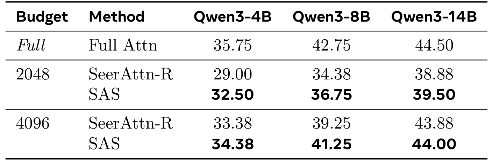
表四针对 BFCL Multi-Turn，列是三种模型规模，行是预算与方法。二千零四十八预算下，四十亿模型 SAS 三十二点五零、Seer 二十九点零零，提高三点五；八十亿为三十六点七五对三十四点三八；一百四十亿为三十九点五零对三十八点八八。所有这六个“模型规模乘预算”的比较中 SAS 都高于 Seer，这比单看数学分数更有意义，因为多轮函数调用涉及参数、状态和先前工具结果的引用，选择器训练又没有专门使用这套代理任务。
不过稠密参照仍高于 SAS。二千零四十八预算时八十亿稠密四十二点七五，SAS 三十六点七五，相差六个百分点；四千零九十六预算时该差距缩到一点五。最大模型四千预算四十四点零零接近稠密四十四点五零，但“接近”与“相同”不能混用。若实际业务更看重多轮调用正确性，这张表支持较大预算作为候选配置，却不支持把推理任务上可接受的小预算直接照搬到工具链。
此处代理评估用 YaRN 把窗口扩到六万五千五百三十六，属于明确的评估配置变化。分数并没有展示每轮失败类型、工具参数缺失率或长链条中的错误累积曲线，也没有线上用户实验。因而 BFCL 总分能证明基准上的相对改进，不能独自证明实际代理不会漏掉关键约束。尤其对于一个工具调用错误就导致后续全部失败的任务，总分差异需要进一步拆成错误类别，检查是否由远端历史被误删引起。论文提供的是较强的迁移信号，而不是工具使用可靠性的完整认证。若将这一设置用于新的业务工具，还需单独验证参数格式和状态引用是否正确。
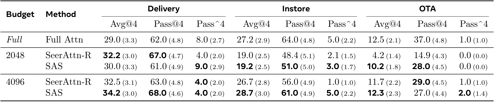
表五使用一百四十亿模型，分 Delivery、Instore、OTA 三个场景，每个场景同时列出四次尝试平均表现、至少一次成功的 Pass@4 与四次均成功的 Pass^4。三种口径刻画的可靠性不同，不能互换：较高的至少一次成功率可能依赖重试，四次均成功率则更严格。二千零四十八预算下，OTA 的平均分 SAS 十点二、Seer 四点二，Pass@4 二十八点零对十四点九，显示稀疏排序确实能减少某些长任务中的失败；但这两者的 Pass^4 都是零，不能说稳定完成已经得到保证。
该表还包含重要反例。在 Delivery 的二千预算下，Seer 平均三十二点二，高于 SAS 三十点零，Pass@4 六十七点零也高于六十一点零；SAS 的优势在更严格的 Pass^4 九点零对四点零。四千预算下，Delivery 和 Instore 多数指标提高，但 OTA 的 Pass@4 是 SAS 二十七点零、Seer 二十九点零，仍为负差。把不同指标折叠成“VitaBench 一贯领先”会掩盖重试覆盖与稳定成功之间的取舍，这也是精读需要保留完整表头和所有场景的原因。
与稠密比较时，四千预算 OTA 平均十二点三接近十二点五，但 Pass@4 二十七点零明显低于三十七点零；Delivery 平均分超过稠密，Pass^4 却只有四点零、低于稠密八点零。结果说明不同失败结构会产生看似矛盾的排名，不能只挑最有利的一列支持结论。括号给出了原文报告的波动，部分差异较小，本文不额外认定显著。实际采用时，应先确定是否允许重试、用户能等待几次调用，再依据对应指标选择预算；论文目前没有把这一服务决策转化成统一收益函数，也没有测量多次失败重试造成的额外工具费用。只有成功口径与成本边界一致，比较不同预算才有实际意义。
3.4 全模型继续预训练是另一组实验
OLMo3-7B 实验从 stage-1 base 检查点开始，使用专用检索 query/key 投影选择器，由原注意力投影初始化，同组查询头共享块选择。块大小仍为六十四，Top-K 三十二，但这次骨干与选择器联合更新。训练长八千一百九十二、全局批量五百一十二、一万三千步，约五百亿 token，学习率从预热峰值 $2\times10^{-4}$ 余弦衰减至 $2\times10^{-5}$。这体现门控目标可以扩展到续训阶段，其投入远大于只更新 Qwen 小选择器的实验。
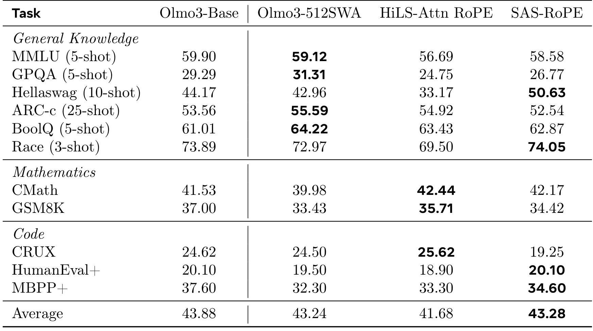
表六将通用知识、数学和代码任务分开，并比较原始稠密模型、经过继续预训练的五百一十二窗口基线、HiLS-Attention 的 RoPE 变体以及 SAS。平均分 SAS 四十三点二八，略高于滑窗四十三点二四，高于 HiLS 四十一点六八，但低于原始稠密四十三点八八。最可靠的整体表述是：在本组续训设置中保留了接近原模型的平均能力，优于所比较的 HiLS 变体；与滑窗的零点零四差异几乎不能承担强结论，更不能说平均能力已超越稠密基础模型。
任务分项显示收益与损失同时存在。HellaSwag 达五十点六三，高于稠密四十四点一七和 HiLS 三十三点一七；Race 七十四点零五略高于稠密七十三点八九。但 GPQA 二十六点七七，低于稠密二十九点二九以及滑窗三十一点三一；CRUX 十九点二五低于稠密二十四点六二；GSM8K 三十四点四二也低于稠密三十七点零零。这些变化可能同时受到稀疏结构、选择器初始化与继续预训练影响，不能用 Qwen 冻结骨干时的控制变量逻辑直接归因。
各行还有不同 few-shot 设置，平均分只是在这组任务与设置上的汇总，不是可泛化的“模型综合智力”。如果关心代码理解或数学，平均看起来接近不意味着目标能力没有下降；相反，HellaSwag 的明显上升也不能抵消某个产品最重要任务的损失。此表的意义在于证明一种端到端稀疏选择训练配方能够在全参数续训中运行并保持较好总体表现，后续仍需更多模型规模、训练量与任务权重的对照，才能判断是否值得替代特定稠密模型或其他稀疏预训练路线。
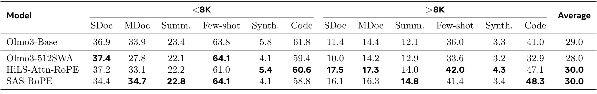
表七把输入分成八千以下与八千以上，并在每个长度区间列单文档、多文档、摘要、few-shot、合成和代码任务，最右侧才是整体均值。SAS 与 HiLS 的平均值都是三十点零，优于原始稠密二十九点零和滑窗二十八点零。这个并列结果支持续训后长上下文使用能力可以保持甚至改善，但没有支持 SAS 在 LongBench 上独占最好，也不能把每个子任务都理解成提高。不同方法的优劣更像是历史选择策略和任务结构之间的相互作用。
长输入的单文档分数，SAS 十六点一高于稠密十一点四，但低于 HiLS 十七点五；多文档十六点三高于稠密十四点四，却低于 HiLS 十七点三。长输入代码 SAS 四十八点三，高于 HiLS 四十七点一和稠密四十一点零，摘要十四点八也高于两个参照。短输入部分则有损失，例如单文档三十四点四低于稠密三十六点九，代码五十八点八低于稠密六十一点八。这些交叉表明总体提升不是一个对所有输入长度都成立的平移。
从因果解释上，本组稠密参照是原始 base，滑窗和两种稀疏方法进行了继续预训练，因而相对 base 的改善不能全部归功于 SAS 稀疏选择。更接近的比较对象是同阶段、同语料条件的其他续训模型；即便如此，也应保留选择器结构及注意力形式的差别。作者将这一节称为对继续预训练的初步扩展证据是恰当的。若要据此规划完整预训练方案，仍缺从头训练、大规模模型以及训练预算匹配下的广泛质量与成本比较，尤其不能由最终均分倒推出五百亿 token 的额外训练一定有经济收益。
3.5 为什么覆盖更少却可能预测更好
作者不仅看最终准确率，还检查选择器的内部行为。单层覆盖率把被选 token 的权重质量与所有 token 的质量相比，跨层召回则把各层选中块求并集，再与稠密模型构造的 oracle 块集合比较：
这里 $w_i$ 分别取 $\exp(z_i)$ 与包含 value 范数的 $\exp(z_i+\log\|v_i\|_2)$；$\mathcal I_{\mathrm{all}}$ 是多层块集合并集，星号集合由稠密注意力在 GQA 组内聚合头部 Top-K、多数投票后再跨层合并得到。这仍是分析用参照，不是模型预测正确性的真值标签。
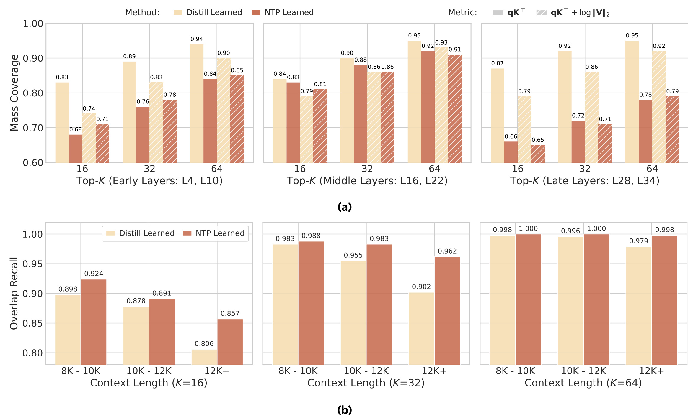
图五上半部按早、中、晚层区分，横轴是十六、三十二、六十四个块的预算；不同颜色表示蒸馏与下一 token 预测训练，不同纹理表示原始注意力质量和加入 value 大小的质量。SAS 在大多数层和预算上覆盖率更低，例如早层十六块的原始质量约零点六八，对比蒸馏零点八三；这说明它并非通过更准确地复制稠密高权重位置取得收益。连加入 value 范数的权重也没有整体翻转结论，因而“只需把注意力蒸馏改成 value 加权蒸馏”并没有被这一分析直接证实。
下半部改为跨层集合后，SAS 的 oracle 召回更高，且在更长输入中差距突出。例如三十二块、超过一万二千 token 的分组，蒸馏零点九零二，SAS 零点九六二；十六块对应零点八零六与零点八五七。这与不同层分工互补的解释一致：某层可以放弃一部分局部高权重块，让其他层处理，从全网络看覆盖的有用信息反而更全面。最终语言模型损失能把后续层反馈带给每层选择器，逐层蒸馏则更直接奖励本层复现，因此两者优化出的分配结构不同。
不过“并集召回更高”尚不能独立证明跨层互补导致准确率提升。并集大小、头之间重合程度、oracle 的投票定义都影响这一指标，而图中没有给出相同并集大小下的因果干预。作者使用的措辞应理解为支持性机制证据，而非数学保证。对研究者来说，更有启发的下一步是控制跨层冗余度或做块替换干预，确认哪些上下文在何层贡献预测。当前结论足以说明单层注意力覆盖率不适合作为最终选择器质量的唯一验收指标，也解释了代理监督目标为什么可能错位。
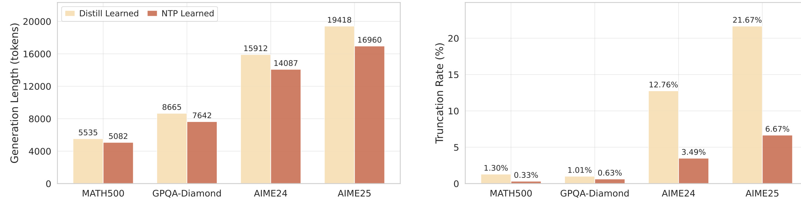
图六固定 Qwen3-4B 和四千零九十六 token 注意力预算，左侧是四个推理任务的平均生成长度，右侧是在三万二千七百六十八最大生成长度下的截断比例。SAS 在四项任务上都更短：AIME24 从一万五千九百一十二降到一万四千零八十七，AIME25 从一万九千四百一十八降到一万六千九百六十。截断率变化更大，AIME24 从 12.76% 降到 3.49%，AIME25 从 21.67% 降到 6.67%；较简单任务的截断率本来就小，改善幅度相应有限。
结合前面的准确率，可以排除“只是更早停下来因而更便宜”的粗糙解释：在多数困难推理比较中，SAS 同时提高正确率、缩短轨迹、减少耗尽生成上限。这与有效历史选择减少反复推演的观点一致，但论文没有逐条标注推理内容，所以不能断言所有节省 token 都来自消除重复或每条推理都更清晰。图里的平均生成长度是行为统计，不能直接替代单步 GPU 加速，也不能把长度减少比例与下一节最大解码加速简单相乘，宣称一个新的端到端收益。
此处也能看见质量与成本相互影响的方式：差的选块可能造成更长、最后仍被截断的无效推理，使固定预算下的总请求成本不降反升。仅测一个注意力算子的耗时就会遗漏这种行为变化。相反，若应用本来只生成很短答案，图六的长推理节省未必出现。因此评估稀疏策略应同时保留每步成本、生成长度和任务成功率三个维度，而这张图只量化其中后两个的关联，不负责证明真实线上总延迟。这样的拆分能让后续复现更容易定位收益来源。
3.6 解码加速的适用范围与新瓶颈
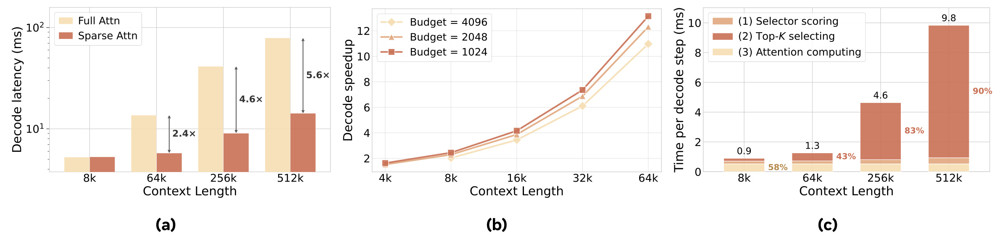
图七是服务后端中的稳态解码计时：Qwen3-4B、单 GPU、张量并行度一、启用 CUDA graphs，输入先完成预填充，再计时生成五百一十二个 token。左图批量为一，纵轴是对数尺度的解码延迟，八千上下文两种方式接近，在六万四千、二十五万六千、五十一万二千分别达到约二点四、四点六、五点六倍加速。中图批量为八、比较三种 token 预算，在六万四千附近最高约十三倍。批量、上下文长度和预算共同决定收益，最高点不能用作一般请求的固定加速承诺。
右图将稀疏解码的选择与注意力阶段拆成 selector scoring、Top-K selecting 和 attention computing。参与注意力的历史 token 数固定，因此注意力子阶段近似不随总上下文长度变化；但选择器要读取所有块摘要，Top-K 要处理更多候选。图中拆分总时间从八千时零点九毫秒到五十一万二千时九点八毫秒，超长上下文 Top-K 约占九成；早期注意力约占五成八。也就是说，稀疏注意力确实去掉了大量 KV 读取，但新的瓶颈已经转到选块，整条稀疏路径并没有保持数学意义上的常数耗时。
正文对左图使用“基本平坦”的描述应按相对于稠密增长的语境理解，不能抹去右图十倍量级的拆分成本增长。论文还指出选择器打分在五十一万二千时接近注意力成本，继续扩展可能超过它。因此后续优化优先级应包括候选摘要扫描与排名内核，而不仅是进一步压缩选中集合。小预算与大预算之间加速差距较有限，也说明系统主要收益来自避开全缓存读取，而非最后那一点注意力预算差。
这里的五点六倍和约十三倍属于指定配置的稳态解码，不包含稠密预填充，也不包含外部工具、网络或排队时间。 同时论文没有在五十一万二千长度提供对应无损质量结论，不能把可运行且更快视为可靠理解同样长的文本。SAS 与 Seer 使用同一推理后端，故其核心差异首先是相同计算机制下的质量；若希望利用更好的选择器进一步降低预算获取加速，需要另做质量阈值对齐比较。当前图证明相对稠密的服务解码收益，而不是 SAS 在同预算下比 Seer 拥有独特计算量优势。
3.7 超长检索仍是明显失败边界
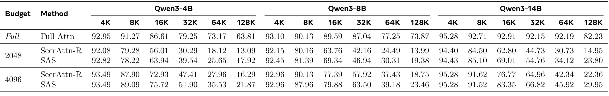
表八来自附录的限制讨论，不能因位置靠后而省略。作者额外从 Dolma3 长序列混合语料采样五亿 token，使用六万四千序列 packing 训练选择器，评估采用 non-thinking 模式并用 YaRN 扩展到十二万八千窗口。因此它不是前面“数学训练直接迁移”的同一个设定，也不能与 LongBench 平均分串成一条同口径曲线。列按三种模型规模再细分四千到十二万八千长度，行给出稠密与两档预算下的两种稀疏方法，分数越高越好。
尽管 SAS 多数情况下优于 Seer，长距离损失依然很大。四十亿模型、四千零九十六预算、十二万八千输入时，SAS 二十一点八七高于 Seer 十六点二九，却远低于稠密六十三点八一；最大模型同配置 SAS 二十九点九五、Seer 二十二点三六、稠密八十二点二三。将预算缩到二千零四十八后，最大模型十二万八千仅二十三点八零。这不是可以忽略的个位数波动，而是方法面对细粒度长距离信息时的实质能力缺口，正好限制了主文的乐观结论。
短长度也并非逐格优势，例如四十亿、二千预算、八千输入 SAS 七十八点二二低于 Seer 七十九点二八；八十亿、四千预算、八千输入八十七点九六低于九十点一三。作者推测池化块摘要难保留针尖式局部线索，输入越长、候选块越多，这种信息压缩损失越容易主导结果。这个解释合理但仍属于作者分析，尚没有用替换摘要结构的充分消融来完全确证。至少可确定的是，单纯把选择器训练目标改为下一 token 预测，没有解除块摘要自身的表示瓶颈。
工程上，这意味着对于长日志中的单条记录、长合同中的一个数字或远端工具结果里的关键标识，应优先做相应细粒度检索验收，而不是只看数学分数或 LongBench 平均值。更高预算、混合稠密层、改进摘要或分层候选检索都可能成为研究方向，但本文没有验证这些方案的有效性，不能当作已经解决的修复。RULER 的负面结果让 SAS 的定位更清楚：它改善的是既有块选择结构中的排序学习，不是一个在任意长度下保留全部信息的机制。
4. 总结
SAS 的核心贡献，是在硬稀疏执行和最终预测监督之间建立了一条足够简单、又经过消融验证的连接。选择器仍然负责块排名，Top-K 仍然决定实际访问哪些历史；训练时把归一化连续门控以对数形式加入 attention logits，使语言模型损失能通过输出贡献更新排名。内部门控、历史 softmax、连续相对大小和稀疏训练范围分别解决信号定义、历史与当前块校准、梯度稳定以及训练成本问题。它们共同构成方法，而不是四个可以随意省略的实现细节。
最值得保留的实验结果是低预算困难推理上的明显提升。在相同 AttnGate 与冻结 Qwen 骨干条件下，二千零四十八预算的四十亿 AIME24 提升十三点零二个百分点，说明逐层稠密注意力模仿并非训练有限预算选择器的唯一、也未必是最有效目标。LongBench 与 BFCL 进一步展示数学选择器的迁移能力，生成长度和截断分析则说明选块质量还会改变推理成本。把这些证据连接起来，可以理解为什么一个没有增加复杂选择器结构的方法仍有研究价值：它改变了优化器被要求学会的事情。
但是这篇论文同样清楚地划出了边界。VitaBench 的三类成功指标有交叉，长距离 RULER 仍明显落后稠密，较大预算推理也存在小幅负差。逐层覆盖降低、跨层召回升高与互补解释一致，却不是因果证明；全参数 OLMo 续训的平均分接近稠密，也不能与只更新轻量门控混为一谈。原文引言与 LongBench 表三有一处数值不一致，本文采用表格结果。对后续讨论来说，保留这些不利信息比单独记住一个最大收益更重要，因为它们决定该方法适合用在哪里。
实现层面，Triton 融合内核避免了显式注意力矩阵，SGLang 后端让稀疏解码进入相对现实的服务路径。公开仓库提供 Qwen 三种规模的训练配方、评估入口与后端子模块说明，这比仅给出算法示意更有复现基础；但本次没有验证依赖兼容性、权重导出、逐算子正确性或整套指标复现，不能把可访问代码等同于已经复现。要进一步采用，应先复现一个模型、一个预算和一个任务，确认冻结参数范围、当前块保留、训练门控移除和评分协议都匹配，再扩大到其他尺度。
从研究优先级看，SAS 后续最值得追的是选择器表示与超长候选排名。预测监督已经缓解目标错位，但池化摘要难保留细粒度针尖信息，长上下文下 Top-K 又成为主要时间开销。更复杂的摘要可能提高质量却增加打分成本，更小候选池可能加速却遗漏远端证据，这些都需要在同一质量阈值下比较。论文并未给出一个可以同时消除两种瓶颈的答案，但它把问题分解得更明确：训练信号、摘要表达、排名开销和最终稀疏读取是四个需要分别测量的部分。
对于推荐或检索研究者，可迁移的认识是有限预算下的局部权重模仿与最终任务贡献并不总一致，以及跨层或多阶段资源分配可能具有互补性。这是基于本文机制的研究启发，不是已经在推荐系统上完成的实验。SAS 本身没有 CTR、召回率、在线点击或推荐收益验证，不能将大模型推理百分点改称业务提升。作为一篇稀疏注意力论文，它提供了扎实的目标对照、可解释的梯度分析和可运行的系统路径；作为超长可靠推理方案，它仍需要更强的细粒度信息保留和质量约束下的系统评估。